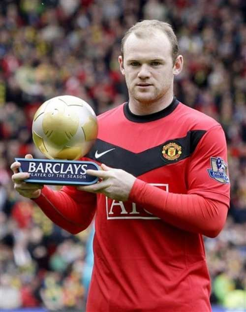

Có rất nhiều người đã giúp đỡ và làm việc cùng để biến giấc mơ Premier League của tôi trở thành hiện thực. Trên hết, cha mẹ và gia đình đã đóng một vai trò quan trọng trong việc đưa tôi đến vị trí ngày hôm nay.
Tất cả các huấn luyện viên và nhà quản lý mà tôi đã làm việc cùng kể từ khi còn là một chàng trai trẻ, người đại diện Paul Stretford và các cộng sự đồng hành với ông ấy, toàn thể đồng đội cũng như bạn bè của tôi ở trong lẫn ngoài sân cỏ: cảm ơn mọi người vì đã ở đó. Nhưng qua quá trình thực hiện cuốn sách này và nghiền ngẫm về những thăng trầm của 10 năm qua, có hai người cần thiết phải nhắc riêng.
Gửi đến vợ tôi, Coleen, cảm ơn vì đã ở đó để trải qua những cay đắng và ngọt bùi; em sẽ không bao giờ biết tình yêu và sự hỗ trợ của em có ý nghĩa như thế nào đối với anh. Còn Kai, con trai, là người đầu tiên bố nghĩ đến vào buổi sáng và cũng là người sau cùng nở nụ cười với bố vào cuối ngày.
Tôi yêu cả hai rất nhiều, họ là nguồn cảm hứng và động lực của tôi mỗi ngày.
Cảm ơn vì tất cả.
Thân ái
Wayne (và bố) xxx

Rất nhiều người đã nhướng mày khi tôi thuyết phục Ban giám đốc Manchester United duyệt chi hàng triệu bảng, nhằm cố gắng “cuỗm” Wayne Rooney khỏi Everton.
Chàng trai này chỉ mới 18 tuổi nhưng đã thể hiện một tài năng hiếm có trong hai năm đầu ở đội Một Everton.
Các nhân viên thầm lặng của Everton đã làm một công việc tuyệt vời, chăm sóc cầu thủ trẻ trong học viện của họ cho đến ngày cậu ấy ra mắt đội Một, chỉ vài tuần trước sinh nhật thứ 17.
Rất lâu trước khi cậu ta cúi chào các đàn anh, tất cả mọi người trong trận đấu đó đều đã nhận thức rõ rằng, Everton đã khai quật được một viên ngọc thô và không mất nhiều thời gian để đưa cậu ấy ra sân khấu lớn.
Everton là câu lạc bộ của Wayne khi còn là một nam sinh, vì vậy, chúng tôi có thể tưởng tượng cậu ấy cảm nhận như thế nào khi khoác lên chiếc áo xanh hoàng gia danh tiếng, và chạy ra ngoài giữa đám đông hò hét tại Goodison Park.
Không có gì ngạc nhiên khi cậu ấy bước lên đội Một với một chút xôn xao. Wayne Rooney được sinh ra để chơi bóng, và rõ ràng ngay từ đầu đã cho thấy, tương lai của cậu ấy được đảm bảo là một nhân vật chính trong các trận cầu.
Chúng tôi không ảo tưởng rằng sẽ mất bất cứ thứ gì ngoại trừ một tấm séc rất lớn, nếu chúng tôi muốn lôi kéo Everton chấp thuận để Wayne thực hiện chuyến đi ngắn trên đại lộ M62.
Tôi cho rằng mọi người đều có giá của họ và cuối cùng chúng tôi xoay xở để đi đến một thỏa thuận với Everton, nhằm đảm bảo các dịch vụ cho cầu thủ trẻ xuất chúng nhất thế hệ của cậu ấy.
Không nghi ngờ gì, đó là một số tiền khổng lồ mà chúng tôi đã trả cho một cầu thủ vốn dĩ còn chưa đủ điều kiện đi bầu cử, nhưng chúng tôi biết mình đang làm gì.
Thường thì một cầu thủ xuất hiện như thể tay đua chắc chắn đạt được đẳng cấp của cầu thủ chuyên nghiệp, và Wayne Rooney là một trong số ấy.
Đó không phải là một canh bạc, đó là một khoản đầu tư vào tương lai, và chắc chắn rằng, trong những năm sau đó, chàng trai đến từ Croxteth đã trả lại gấp nhiều lần số tiền đội từng chi ra.
Nếu ai đó còn hoài nghi về quyết định của chúng tôi, thì nó gần như lập tức tan biến khi cậu ấy lập hat-trick ngay trong trận ra mắt vòng bảng Champions League tại Old Trafford, với câu lạc bộ Fenerbahçe từ Thổ Nhĩ Kỳ. Đó là khởi đầu cho một sự đền đáp sớm!
Tôi sẽ không phiền nếu cậu ấy mất hàng tuần để ghi bàn thắng đầu tiên cho đội bóng, nhưng phải nói là tôi đã rất vui khi cậu ấy đã sút tung lưới theo phong cách cổ điển.
Sự kình địch giữa Manchester và Liverpool đã lưu danh qua nhiều năm, nhưng đây là một Scouser [người vùng Liverpool], người đã ngay lập tức được kết nạp vào gia đình Mancunian.
Đó chỉ là vài dòng đầu trong một câu chuyện kỳ diệu đã mở ra sự nghiệp của cậu ấy tại Manchester United. Người đã trở thành một trong những trụ cột của câu lạc bộ và thường được công nhận là cầu thủ giỏi bậc nhất kỷ nguyên Premier League lẫn Champions League.
Wayne cũng đã giải quyết những vấn đề về tính kỷ luật mà bản thân gặp phải khi còn là một cầu thủ trẻ. Từng bị coi là bốc đồng và luôn có xu hướng vướng vào rắc rối với các huấn luyện viên trưởng, cậu ấy giờ đây đã là một phiên bản cách tân, người đặt ra tiêu chuẩn cho phần còn lại của đội.
Cần có cá tính mạnh để vượt qua một số đặc tính cá nhân, nhưng cậu ấy đã đào sâu và loại bỏ những gì là một phần phản tác dụng trong bản ngã của mình.
Sau đó có một chút lung lay từ cậu ấy vào mùa thu năm 2010, khi đã thông báo rằng muốn thu dọn và rời khỏi Old Trafford.
Tôi bị sốc nhưng không một chút thất vọng và chẳng mất nhiều thời gian để giải quyết vấn đề nhỏ đó, đủ sớm để cậu ta đặt bút lên bản hợp đồng gia hạn.
Tôi không định kể cuộc nói chuyện giữa chúng tôi trong các buổi thảo luận vào lúc đó, nhưng tôi đã biết ngay từ đầu rằng trái tim cậu ấy vẫn thuộc về Manchester United, và không sứt mẻ gì khi chúng tôi chỉ ra suy nghĩ sai lầm của cậu ấy. Wayne Rooney nắm lấy nó để khắc phục bản thân, tạo nên một chỗ đứng rất đặc biệt trong lịch sử Manchester United.
Cậu ấy bắt đầu xô đổ các kỷ lục lâu năm ở câu lạc bộ, và với độ tuổi đó, trước khi đến thời điểm kiệt sức, không có giới hạn cho những gì Wayne có thể chạm tới được.
Tôi nghĩ rằng mình đã đưa ra một hoặc hai quyết định tuyệt vời trong quãng thời gian gắn bó với bóng đá - và cả một vài thứ khiến tôi muốn quên! Nhưng không nghi ngờ gì, chữ ký của Wayne Rooney từ Everton là sáng suốt nhất trong số đó.
Sir Alex Ferguson